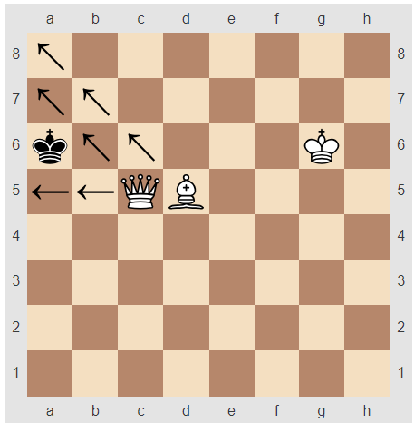

체스하쉴? 스테일메이트
home
체스의 기물
스테일 메이트
앙파상
캐슬링
오프닝
체크메이트
스테일메이트

스테일메이트(stalemate)란 체스의 룰 중 하나이고 킹이 체크 상태가 아니면서 이번 차례에 스스로 체크가 되는 자충수 외에는 둘 수가 없는 상태를 말한다.,
무조건 킹에만 해당되지는 않아서, 기물이 남아 있어도 체크를 막아야 하거나 진로가 막혀 움직일 수 없으면 스테일메이트가 생긴다.
스테일메이트가 발생하면 무승부가 된다.